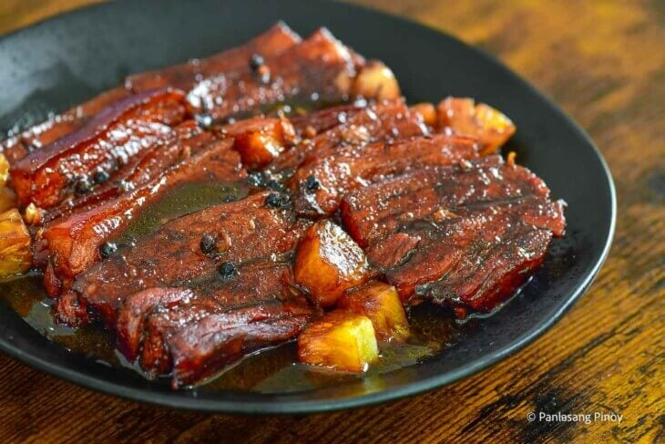
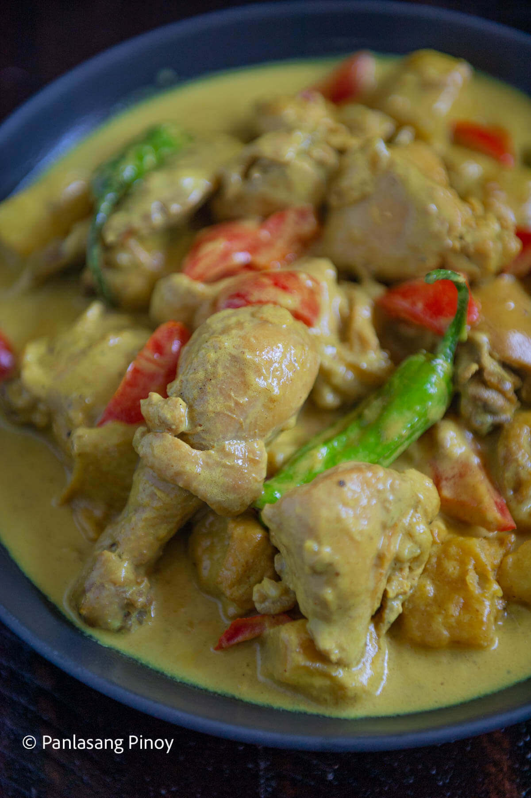
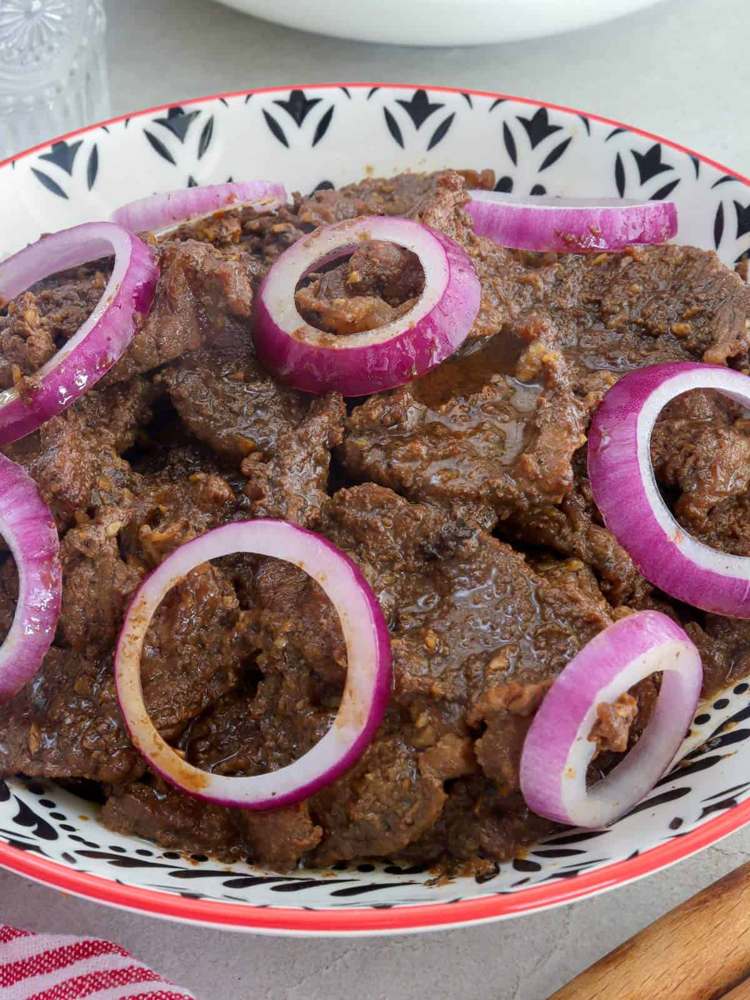
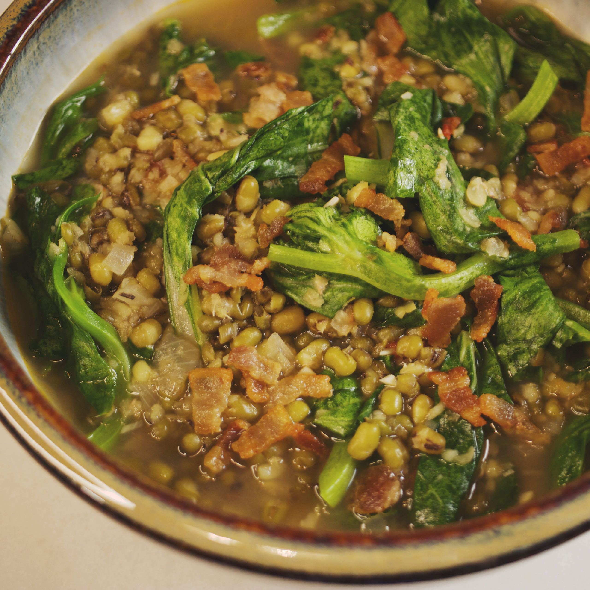
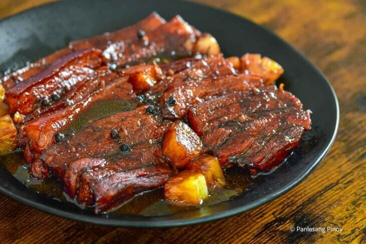
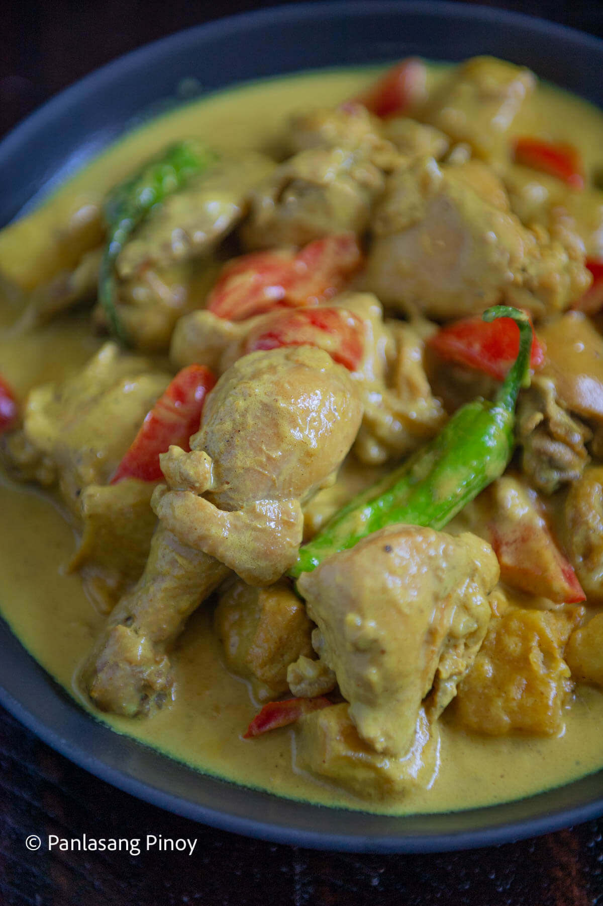
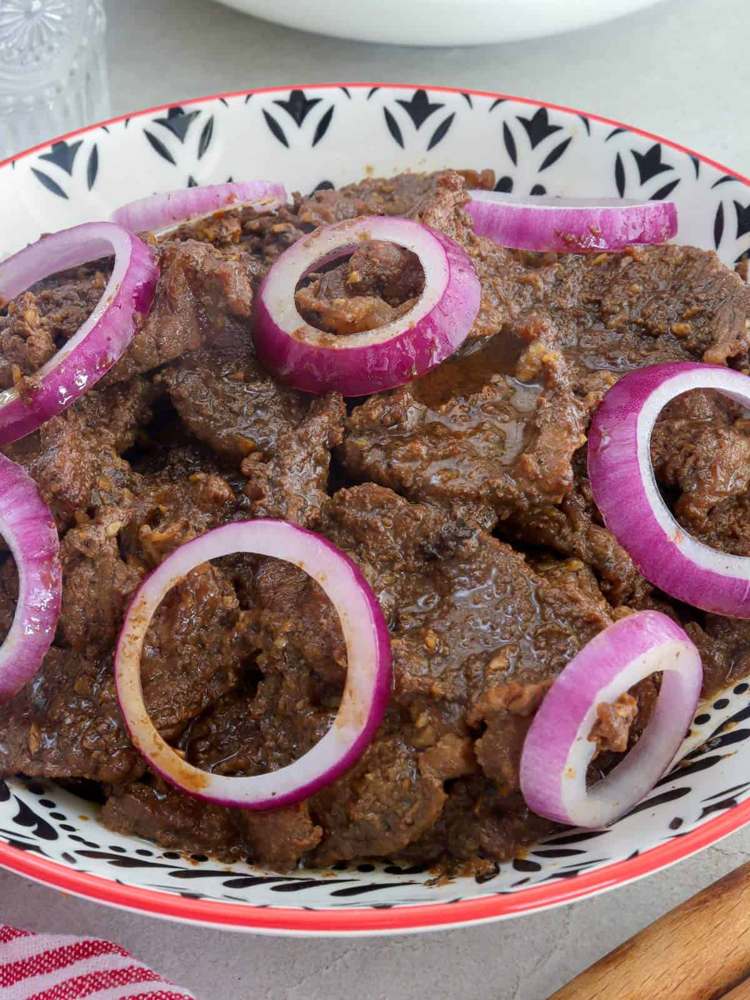
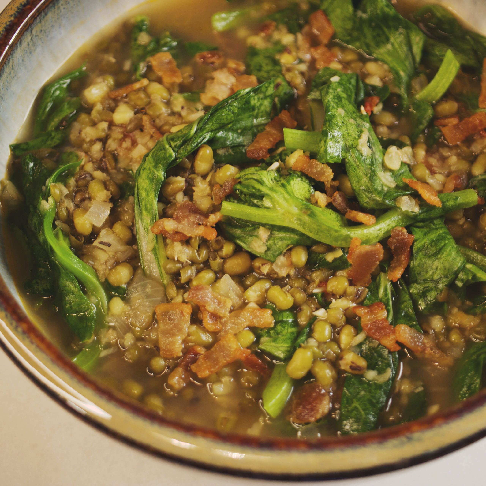

LIST
- Pork Hamonado
As for its origins, several sources point to the Spanish colonization period as the time when this recipe was created.
After all, the name comes from the Spanish word “jamon,” meaning ham.
It is possible that this is because people from Spain introduced certain spices and cooking methods to Filipinos,
which may have led to the birth of the hamonado dish.

- Pinoy Chicken Curry
This version is considered Filipino food. The ingredients used and not used in this recipe make this dish different from the traditional.
Fish sauce, bell pepper, celery, and coconut milk or evaporated milk are some of the ingredients that can be found on Filipino chicken curry versions.

- Pork Adobo
Pork Adobo is definitely a favorite among many around the world. For this, we cook pork slices in a perfect mix of soy sauce, vinegar, and garlic to make this savory and sour viand.
And I’ve got to say, it’s definitely a great way to introduce the world to what Pinoy cooks can make! But actually, there are other renditions of adobo.

- Filipino Beef Steak
Bistek Tagalog is the Filipino take on the world-famous beef steak. When you’re sick and tired of the typical steak night after night, this exotic recipe is sure to revive your love for a health-conscious diet.
Traditionally, Bistek Tagalog is made of thinly sliced beef sirloin or the top round braised in lemon juice, vinegar, soy sauce, brown sugar, and ring-shaped yellow onions.
The end dish is so tender, hearty, and perfectly balanced that you can’t go wrong with it!

- Munggo Guisado
Traditionally, Munggo Guisado is a meatless dish. With the majority of Filipinos being Catholic, this mung bean stew is a favorite alternative as they refrain from meat all Fridays of the Lenten season.
But obviously, you can tweak the recipe to suit your liking. Typically, Munggo Guisado is packed with mung beans, spinach, tomatoes, shrimp paste, and pork.
You can expect a holistic flavor of the stew’s crunchy, slightly salted, and satisfyingly tender mouthfeel.

As for its origins, several sources point to the Spanish colonization period as the time when this recipe was created. After all, the name comes from the Spanish word “jamon,” meaning ham. It is possible that this is because people from Spain introduced certain spices and cooking methods to Filipinos, which may have led to the birth of the hamonado dish.
This version is considered Filipino food. The ingredients used and not used in this recipe make this dish different from the traditional. Fish sauce, bell pepper, celery, and coconut milk or evaporated milk are some of the ingredients that can be found on Filipino chicken curry versions.
Pork Adobo is definitely a favorite among many around the world. For this, we cook pork slices in a perfect mix of soy sauce, vinegar, and garlic to make this savory and sour viand. And I’ve got to say, it’s definitely a great way to introduce the world to what Pinoy cooks can make! But actually, there are other renditions of adobo.
Bistek Tagalog is the Filipino take on the world-famous beef steak. When you’re sick and tired of the typical steak night after night, this exotic recipe is sure to revive your love for a health-conscious diet. Traditionally, Bistek Tagalog is made of thinly sliced beef sirloin or the top round braised in lemon juice, vinegar, soy sauce, brown sugar, and ring-shaped yellow onions. The end dish is so tender, hearty, and perfectly balanced that you can’t go wrong with it!
Traditionally, Munggo Guisado is a meatless dish. With the majority of Filipinos being Catholic, this mung bean stew is a favorite alternative as they refrain from meat all Fridays of the Lenten season. But obviously, you can tweak the recipe to suit your liking. Typically, Munggo Guisado is packed with mung beans, spinach, tomatoes, shrimp paste, and pork. You can expect a holistic flavor of the stew’s crunchy, slightly salted, and satisfyingly tender mouthfeel.
